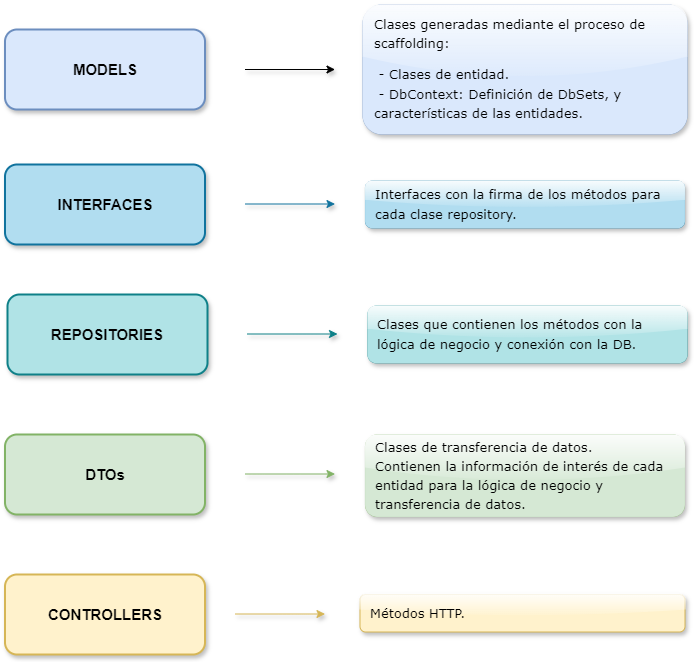

Esta guía tiene la finalidad brindar las herramientas básicas para comprender la estructura y los conceptos esenciales para la creación de una Web API en C# con ASP.Net Core 8, con enfoque DB First.
Se verá paso a paso el armado de la estructura general de la API y se verán algunos ejemplos de operaciones CRUD.
No es un tutorial con la finalidad de armar un proyecto en particular.
Sino que vamos a recorrer, paso a paso, el camino para que puedas crear tu propio proyecto ASP.NET Web API 😊
Conceptos involucrados:
-
Entity Framework Core para administrar la conexión con la base de datos.
-
Arquitectura basada en el Patrón de Repositorio.
-
Enfoque DB First, aplicando Ingeniería inversa para generar las clases de entidades a partir de los modelos de una base de datos ya existente.
Para desarrollar el proyecto propuesto en esta guía, es necesario contar con:
-
Visual Studio 2022 configurado para poder crear aplicaciones ASP.NET con C#.
-
SQL Server Management Studio o Azure Data Studio.
-
Postman (No es obligatorio).
En esta guía se asume que contás con los siguientes conocimientos:
-
Lógica de programación.
-
Programación Orientada a Objetos.
-
Nivel intermedio de C#, incluyendo manejo de LINQ y programación asíncrona.
-
Nivel básico de ASP.NET.
-
Nivel básico de SQL Server / T-SQL.
-
Nociones de arquitectura MVC (desestimando las vistas).
-
Nociones básicas del protocolo HTTP.
-
Desarrollo de CRUD básico con ASP.NET.
ASP.NET Core es un framework Multi-Plataforma de código abierto. Se trata de un nuevo diseño de ASP.NET 4.x con algunos cambios en la arquitectura, dando como resultado un framework más sencillo y permitiendo el desarrollo de sistemas con mejor escalabilidad y rendimiento.
Para más detalles sobre ASP.NET Core, visitar la Documentación de Microsoft.
Arquitectura del proyecto
La arquitectura del proyecto a desarrollar en esta guía, se basa en el patrón de repositorio. En este patrón de diseño se agrega una capa de abstracción entre el controlador y la conexión con la base de datos.
Esto permite que el proyecto sea más escalable y fácil de mantener. Además de que proporciona un código más limpio y modular, gracias a que facilita su reutilización.
El esquema general del proyecto:

Los directorios contenidos en el proyecto pueden variar, pero en este caso se trabajará con esta estructura. Se agregarán algunas carpetas adicionales que se mencionarán cuando sea requerido.
En algunos proyectos (Ej., enfoque Code First), es frecuente que se ubique el DbContext en una carpeta separada, llamada Data. Sin embargo, al tratarse de un proyecto DB First, el DbContext se guardará automáticamente en el mismo directorio donde se generarán las clases de entidad (Models).
En esta guía vamos a trabarar con enfoque DB First. Por lo que es necesario que contemos previamente con una base de datos SQL Server ya existente.
Para crear la base de datos, podés copiar y ejecutar el siguiente código T-SQL o bien crear tu propia base de datos con la temática que desees.
El proyecto de ejemplo es una API que permite realizar CRUD básico para administrar una librería ficticia, llamada El Portal.
I - Creación de la DB:
DATABASE elportal;
II - Creación de las tablas de la DB:
USE elportal;
CREATE TABLE Libros (
ISBN VARCHAR(20) PRIMARY KEY,
Titulo VARCHAR(255) NOT NULL,
Autor VARCHAR(100),
Genero VARCHAR(50),
Precio DECIMAL(10, 2),
Stock INT
);
CREATE TABLE Clientes (
ClienteID INT IDENTITY(1,1) PRIMARY KEY,
Nombre VARCHAR(100) NOT NULL,
Email VARCHAR(255),
Telefono VARCHAR(20),
FechaAlta DATETIME
);
CREATE TABLE Ventas (
VentaID INT IDENTITY(1,1) PRIMARY KEY,
FechaVenta DATETIME NOT NULL,
ClienteID INT,
FOREIGN KEY (ClienteID) REFERENCES Clientes(ClienteID)
);
CREATE TABLE DetalleVenta (
DetalleVentaID INT IDENTITY(1,1) PRIMARY KEY,
VentaID INT,
ISBN VARCHAR(20),
Cantidad INT,
PrecioUnitario DECIMAL(10, 2),
FOREIGN KEY (VentaID) REFERENCES Ventas(VentaID),
FOREIGN KEY (ISBN) REFERENCES Libros(ISBN)
);
III - Inserción de registros:
USE elportal;
INSERT INTO Libros (ISBN, Titulo, Autor, Genero, Precio, Stock)
VALUES
('978-0345339706', 'El Señor de los Anillos: La Comunidad del Anillo', 'J.R.R. Tolkien', 'Fantasía', 12.99, 100),
('978-0451167712', 'El Resplandor', 'Stephen King', 'Terror', 9.99, 50),
('978-0307475739', 'El Principito', 'Antoine de Saint-Exupéry', 'Infantil', 7.99, 120),
('978-0743273565', 'Harry Potter y la Piedra Filosofal', 'J.K. Rowling', 'Fantasía', 10.99, 90),
('978-0345371980', 'Last Chance to See', 'Douglas Adams', 'Ciencia Ficción', 11.99, 15),
('978-0345391804', 'Guía del Autoestopista Galáctico', 'Douglas Adams', 'Ciencia Ficción', 9.99, 40),
('978-0345418913', 'El Restaurante del Fin del Mundo', 'Douglas Adams', 'Ciencia Ficción', 8.99, 35),
('978-0140327557', 'Charlie y la Fábrica de Chocolate', 'Roald Dahl', 'Infantil', 8.99, 25),
('978-0142410394', 'Matilda', 'Roald Dahl', 'Infantil', 7.99, 30),
('978-0141301068', 'James y el Melocotón Gigante', 'Roald Dahl', 'Infantil', 6.99, 20),
('978-4088732897', 'Death Note', 'Tsugumi Ohba', 'Manga', 9.99, 25),
('978-1569319000', 'Detective Conan', 'Gosho Aoyama', 'Manga', 8.99, 30),
('978-1632364616', 'Akira', 'Katsuhiro Otomo', 'Manga', 12.99, 20),
('978-1935429005', 'Ghost in the Shell', 'Masamune Shirow', 'Manga', 11.99, 15);
INSERT INTO Clientes (Nombre, Email, Telefono)
VALUES
('Juan Pérez', 'juan.perez@email.com', '123-456-7890'),
('Ana García', 'ana.garcia@email.com', '987-654-3210'),
('Carlos López', 'carlos.lopez@email.com', '555-555-5555'),
('Laura Rodríguez', 'laura.rodriguez@email.com', '111-222-3333'),
('María Fernández', 'maria.fernandez@email.com', '444-333-2222');
Elección de la plantilla para desarrollar una API Web con ASP.NET Core 8:
-
Abrir Visual Studio 2022.
-
Ir a "Create a new project".
-
Elegir la plantilla "ASP.NET Core Web API". Click en "Next".
-
Asignar un nombre al proyecto y elegir la ubicación del mismo. Click en "Next".
En este caso elegimos LibreriaElPortal para la solución y LibreriaElPortal.API para el proyecto.
-
Elegir la versión del Framework de preferencia. En este caso elegiremos .NET 8.0 (Long Term Support). Click en "Create".
Se creará un proyecto con el siguiente contenido:
Para instalar paquetes NuGet, hacer click derecho sobre el proyecto y seleccionar la opción "Manage NuGet Packages".
Una vez en el administrador de paquetes NuGet, instalar los siguientes paquetes:
-
Microsoft.Entityframeworkcore
-
Microsoft.Entityframeworkcore.tools
-
Microsoft.Entityframeworkcore.SqlServer
-
Microsoft.Entityframeworkcore.Design
Es importante tener en cuenta que la versión de los paquetes debe ser compatible con la versión de .NET elegida al crear el proyecto.
Ej., si se está trabajando sobre un proyecto que usa .NET 8, la versión de estos paquetes debe ser 8.x.x, mientras que si la versión de .NET del proyecto es .NET 6, la versión de los paquetes debe ser 6.x.x
Importar entidades de la base de datos
1. Abrir la consola de administracion de paquetes.
2. Posicionarse en el directorio del proyecto.
cd LibreriaElPortal.API
3. Ejecutar el comando de Scaffolding para crear automáticamente las clases de entidades en Models y el archivo de contexto, a partir de la base de datos.
El siguiente comando de ejemplo trae la totalidad de las tablas existentes en la dase de datos, normalizando los nombres de las entidades según la nomenclatura por defecto predeterminada por el framework. A continuación se describen algunas opciones para personalizar el proceso de Scaffolding.
Scaffold-DbContext "Server=.\SQLExpress;Database=elportal;Trusted_Connection=true;TrustServerCertificate=true;" Microsoft.EntityFrameworkCore.SqlServer -OutputDir Models
Con este comando se genera un directorio con el nombre Models con el siguiente contenido:
- Una clase que hereda de DbContext, donde se definen los DbSets, las características de las entidades y la relación entre ellas.
- Una clase de entidad para cada tabla existente en la base de datos.
NOTAS:
-
Para poder ejecutar este comando sin problemas en ASP.NET Core 8, es necesario asegurarse de que el atributo <InvariantGlobalization> esté seteado en false en la configuración del proyecto.
-
La cadena de conexión del ejemplo es válida para una conexión con autenticación de Windows. Para acceder con usuario y contraseña, quitar el atributo Trusted_Connection=true; y agregar usuario y contraseña a la cadena de conexión.
Más opciones de Scaffolding:
-
Aregar seguridad a la cadena de conexión:
Para no exponer la cadena de conexión en el archivo DbContext, se recomienda tener esta información en AppSettings y luego correr el comando de scaffolding apuntando a la cadena de conexión configurada en este archivo.
AppSettings.json:
{
"ConnectionStrings": {
"DefaultConnection": "Server=.\\SQLExpress;Database=elportal;Trusted_Connection=true;TrustServerCertificate=true;"
}
}
Comando por consola PM:
Scaffold-DbContext "Name=DefaultConnection" Microsoft.EntityFrameworkCore.SqlServer -OutputDir Models
-
Importar un subconjunto de tablas:
Para poder realizar el proceso de ingeniería inversa, trayendo únicamente las tablas de interés para la aplicación, se puede modificar el script de scaffolding, aclarando cuáles son estas tablas.
Compando por consola PM:
Scaffold-DbContext "Name=DefaultConnection" Microsoft.EntityFrameworkCore.SqlServer -t Clientes,Libros,Ventas -o Models
IMPORTANTE: Cuando se quiera incorporar nuevas tablas a nuestro proyecto con el comando de actualización del contexto (se verá más adelante en esta guía), es necesario incluir también las tablas anteriores. De lo contrario se perderá el vínculo con estas entidades.
-
Evitar el renombramiento de tablas y campos al crear las clases de entidad:
Entity Framework Core (EF Core), va a intentar pluralizar los nombres de tablas al crear los DBSets y también va a intentar singularizar estos nombres al crear las clases de entidad. Lo cual no siempre nos va a favorecer a la hora de interpretar y asociar las clases con su significado según la nomenclatura establecida en la base de datos.
Esto se soluciona agregando la opción -NoPluralize al correr el comando Scaffold-DbContext
A su vez, EF Core, por defecto, está configurado para convertir los nombres, tanto de las tablas como de los campos, a camel case.
Esto se soluciona agregando la opción -UseDatabaseNames al correr el comando Scaffold-DbContext
Aplicando estos dos conceptos, el comando de creación de DbContext, nos quedaría así:
Scaffold-DbContext "Name=DefaultConnection" Microsoft.EntityFrameworkCore.SqlServer -t Clientes,Libros,Ventas -o Models -UseDatabaseNames -NoPluralize
IMPORTANTE: Cuando se quiera incorporar nuevas tablas a nuestro proyecto con el comando de actualización del contexto (se verá más adelante en esta guía), es necesario incluir también las tablas anteriores. De lo contrario se perderá el vínculo con estas entidades.
Para más información sobre los parámetros para Scaffold-DbContext, revisar la documentación oficial de Microsoft.
Para poder acceder a la base de datos a través de una instancia del DbContext, es necesario registrar este servicio. Esto se logra agregándolo al contenedor de servicios, desde el archivo Program.cs, mediante inyección de dependencias.
El registro del DbContext tiene que estar entre las líneas "var builder = WebApplication.CreateBuilder(args);" y "var app = builder.Build();"
var builder = WebApplication.CreateBuilder(args);
builder.Services.AddDbContext<ElPortalDbContext >(options =>
options.UseSqlServer(builder.Configuration.GetConnectionString("DefaultConnection")));
var app = builder.Build();
En la carpeta "Controllers" ubicada en la raiz del proyecto, crear un nuevo controlador llamado LibroController, eligiendo la opción API Controller - Empty.
Dentro del controlador, declaramos una variable privada de sólo lectura de tipo elportalContext (o como hayas llamado a tu contexto de base de datos) para luego asignarle una instancia del DbContext mediante inyección de dependencias en el constructor del controlador.
namespace LibreriaElPortal.API.Controllers
{
[Route("api/[Controller]")]
[ApiController]
public class LibroController : Controller
{
public readonly elportalContext _context;
public LibroController(elportalContext context)
{
_context = context;
}
}
}
Una vez que tenemos una instancia del DbContext, podemos crear nuestro primer método HTTP.
En el siguiente ejemplo, hacemos un método HTTP GET, para obtener el listado de registros existentes en la tabla de libros:
namespace LibreriaElPortal.API.Controllers
{
[Route("api/[Controller]")]
[ApiController]
public class LibroController : Controller
{
public readonly elportalContext _context;
public LibroController(elportalContext context)
{
_context = context;
}
[HttpGet]
public async Task<IActionResult> GetLibros()
{
return Ok(await _context.Libros.ToListAsync());
}
}
}
IActionResult permite devolver los diferentes tipos de respuesta posibles de la API, y no sólo de un tipo en particular.
Data Transfer Objects (DTO)
A la hora de recibir o enviar objetos que representen a las diferentes entidades, lo más conveniente es crear clases específicas que contengan sólo la información que sea de interés para cada funcionalidad. A estas clases, las llamamos DTO (de sus siglas en inglés: Data Transfer Object).
Por ejemplo, tenemos la entidad Cliente que tiene los siguientes atributos:
public int ClienteId { get; set; }
public string Nombre { get; set; } = null!;
public string Email { get; set; } = null!;
public string? Telefono { get; set; }
public DateTime? FechaAlta { get; set; }
public virtual ICollection<Venta> Venta { get; set; } = new List<Venta>();
-
A la hora de crear un cliente, dado que el ID del (ClienteId) se genera automáticamente, no sería necesario solicitar el envío de este campo en el input de la solicitud.
-
Además, la fecha de alta (FechaAlta) debería poder configurarse desde el código, y no ser un dato requerido dentro del input.
-
Por otro lado, EF Core detecta las entidades que tienen relación de muchos a muchos y lo refleja en la clase modelo, agregando en cada una, una lista de objetos de la otra como atributo. En el ejemplo, la clase Cliente tiene una lista de Ventas como atributo. Este atributo tampoco nos interesa si queremos crear un cliente, ya que los registros de ventas los haremos desde un objeto de tipo Venta y en un método específico para ese fin.
Entonces, considerando los puntos mencionados, convendría crear una clase DTO que se ajuste a nuestras necesidades para este caso.
Para ello, crearemos una carpeta con el nombre DTOs en la raiz del proyecto, a la cual le agregaremos la clase AgregarClienteDto.cs con los siguientes atributos:
public string Nombre { get; set; } = null!;
public string Email { get; set; } = null!;
public string? Telefono { get; set; }
AutoMapper
A la hora de conectar con la base de datos, siempre lo haremos desde un DbSet asociado a una clase de entidad, según lo establecido en el DbContext. Entonces debemos transformar el DTO en una clase de etidad para poder, por ejemplo, insertar un registro en la tabla de Clientes, dado que el contexto no reconoce a la clase DTO como equivalente a la clase de entidad.
Para pasar el contenido de un objeto de clase AgregarClienteDto a uno de clase Cliente, existen varias alternativas. Una de ellas es asignar manualmente el valor de cada atributo del objeto de origen a los atributos del objeto de destino. Otra opción es utilizar AutoMapper para que la converción se de de forma automática.
Cómo usar AutoMapper
-
Instalar el paquete AutoMapper desde el administrador de paquetes NuGet.
-
Establecer los perfiles de mapeo:
1 - Crear Una carpeta llamada Helpers, Herramientas o como desees (esta carpeta nos será de utilidad para ir agregando clases auxiliares para distintas funcionalidades de la aplicación), y allí, crear la clase MappingProfiles.cs.
2 - Hacer que la clase MappingProfiles.cs herede de Profile y crear un constructor, dentro del cual se van a establecer las relaciones entre Modelos y DTOs.
public class MappingProfiles : Profile
{
public MappingProfiles()
{
CreateMap<AgregarClienteDto, Cliente>();
}
}
El primer argumento es la clase de origen y el segundo es la clase de destino. Por lo que si queremos hacer la conversión inversa, debemos definirlo también en los perfiles de mapeo.
3 - Agregar el servicio de AutoMapper al contenedor de servicios en Program.cs.
builder.Services.AddAutoMapper(AppDomain.CurrentDomain.GetAssemblies());
-
Usar AutoMapper.
Para poder usar el perfil de mapeo establecido en MappingProfiles.cs, generar una instancia de IMapper mediante inyección de dependencias. Luego a travez de esta instancia de IMapper, accedo a mis perfiles de mapeo.
[Authorize]
[Route("api/[controller]")]
[ApiController]
public class ClienteController : ControllerBase
{
private readonly elportalContext _Context;
private readonly IMapper _mapper;
public ClienteController(elportalContext elportalContext, IMapper mapper)
{
_Context = elportalContext;
_mapper = mapper;
}
[HttpPost]
public async Task<IActionResult> CrearCliente([FromBody] AgregarClienteDto cliente)
{
Cliente newCliente = _mapper.Map<Cliente>(cliente);
newCliente.FechaAlta = DateTime.Now;
await _Context.Clientes.AddAsync(newCliente);
if (await _Context.SaveChangesAsync() > 0)
{
return CreatedAtAction(nameof(GetCliente), new { id = newCliente.ClienteId }, newCliente);
}
return StatusCode(500, "Hubo un error al crear el cliente");
}
}
Tener en cuenta que en este ejemplo no se hacen validaciones ni se contempla el manejo de errores. Es simplemente para mostrar el uso de AutoMapper.
Emplear patrón de repositorio
El patron de repositorio es un patron de diseño que nos permite abstraer el acceso a la base de datos y la lógica de negocio de los controladores. Esto da como resultado una arquitectura más limpia y fácil de mantener.
Cómo implementar el Patrón de Repositorio
-
Crear la capa de repositorio.
Para ello necesitamos crear dos directorios nuevos en la raíz del proyecto:
-
Interfaces: Las interfaces definen un conjunto de operaciones que deben ser implementadas por su correspondiente clase de repositorio.
-
Repositorio (o Repository): La capa de repositorio contiene las clases donde se desarrolla la lógica de negocio, mediante la implementación de las operaciones definidas en su respectva interfaz (Habrá una interfaz por cada clase repositorio).
En el caso de este proyecto, generaremos una clase repositorio para cada entidad (no necesariamente será siempre así).
-
Crear una clase de repositorio y su correspondiente interfaz.
-
Primero crearemos la interfaz para clientes con el nombre IClientesRepository.cs.
Click derecho sobre el directorio "Interfaces" agregar / add nuevo item / new item seleccionar el tipo de item "Interface".
-
Luego crearemos la clase de repositorio para clientes con el nombre ClientesRepository.cs.
Click derecho sobre el directorio "Repositorio" agregar / add nuevo item / new item seleccionar el tipo de item "Class".
ClientesRepository va a heredar de IClientesRepository e implementará sus métodos.
-
Trasladar los métodos del controlador a la capa de repositorio.
Desde el controlador, tomamos el nombre del método de interés, su input y su output, para establecer la firma del método a definir en la interfaz e implementar en la clase repositorio. En este ejemplo, el método que tomamos como referencia, es el de creación de un cliente y lo llamamos CrearClienteAsync, dado que vamos a hacer que el método sea asíncrono.
Así nos quedaría nuestra interfaz IClientesRepository:
using LibreriaElPortal.API.DTOs;
namespace LibreriaElPortal.API.Interfaces
{
public interface IClientesRepository
{
Task<ClienteDto> CreateClienteAsync(AgregarClienteDto cliente);
}
}
Luego en nuestra la clase ClientesRepository, heredamos la interfaz IClientesRepository y generamos una instancia del DbContext mediante inyeccón de dependencias, del mismo modo que anteriormente lo habíamos hecho en el controlador.
Finalmente, implementamos el método CrearClienteAsync, trasladando la lógica anteriormente definida en el controlador, pero con algunos cambios:
-
Agregaremos un DTO para cliente, que no incluya el atributo que guarda la lista de ventas asociadas, para ser devuelto por el método, en lugar de devolver un objeto Cliente. Lo llamaremos ClienteDto.
-
Pondremos el código dentro de un bloque try-catch, para manejar posibles errores.
.
Así nos quedaría nuestra clase ClientesRepository:
using AutoMapper;
using AutoMapper;
using LibreriaElPortal.API.DTOs;
using LibreriaElPortal.API.Interfaces;
using LibreriaElPortal.API.Models;
using Microsoft.EntityFrameworkCore;
namespace LibreriaElPortal.API.Repositorio
{
public class ClientesRepository : IClientesRepository
{
private readonly ElPortalDbContext _Context;
private readonly IMapper _mapper;
public ClientesRepository(ElPortalDbContext elportalContext, IMapper mapper)
{
_Context = elportalContext;
_mapper = mapper;
}
public async Task<ClienteDto> CreateClienteAsync(AgregarClienteDto cliente)
{
try
{
var newCliente = _mapper.Map<Cliente>(cliente);
newCliente.FechaAlta = DateTime.Now;
await _Context.Clientes.AddAsync(newCliente);
if (await _Context.SaveChangesAsync() > 0)
{
var clienteDto = _mapper.Map<ClienteDto>(newCliente);
clienteDto.FechaAlta = DateTime.Now;
return clienteDto;
}
return null;
}
catch (Exception ex)
{
return null;
}
}
}
}
-
Modificar el controlador para que llame al método de repositorio.
En el controlador, se realiza la inyección de dependencias del repositorio, para obtener una instancia de IClientesRepository.
Así nos quedaría nuestro controlador ClienteController:
using LibreriaElPortal.API.DTOs;
using LibreriaElPortal.API.Interfaces;
using Microsoft.AspNetCore.Mvc;
namespace LibreriaElPortal.API.Controllers
{
[Route("api/[controller]")]
[ApiController]
public class ClienteController : ControllerBase
{
private readonly IClientesRepository _clientesRepository;
public ClienteController(IClientesRepository clientesRepository)
{
_clientesRepository = clientesRepository;
}
[HttpPost]
public async Task <IActionResult> CrearCliente([FromBody] AgregarClienteDto cliente)
{
ClienteDto resultado = await _clientesRepository.CreateClienteAsync(cliente);
if (resultado == null)
{
return StatusCode(500, "Hubo un error al crear el cliente");
}
return CreatedAtAction(nameof(GetClienteById), new { id = resultado.ClienteId }, resultado);
}
}
}
-
Registrar el repositorio en el contenedor de servicios mediante inyección de dependencias:
En Program.cs:
builder.Services.AddScoped<IClientesRepository, ClientesRepository>();
Como estamos trabajando con enfoque DB Fist, lo más adecuado es hacer las actualizaciones de la base de datos, primero en la base de datos y luego traer los cambios con ingeniería inversa, mediante el comando de Scaffold-DbContext.
Al momento de actualizar los modelos mediante el comando de Scaffold-DbContext, se debe agregar el parámetro -force, para permitir la sobrescritura del DbContext.
Es importante tomar en cuenta las opciones de Scaffold-DbContext que se hayan elegido para la creación inicial del DbContext. Ver estas opciones en en el apartado Importar entidades de la base de datos.
También se debe tener presente que en los casos de scaffolding sobre un subconjunto de tablas, cuando se quiera incorporar nuevas tablas a nuestro proyecto con el comando de actualización del contexto, es necesario incluir también las tablas anteriores. De lo contrario se perderá el vínculo con estas entidades.
Ejemplo de comando para actualización de DbContext
Scaffold-DbContext "Name=DefaultConnection" -force Microsoft.EntityFrameworkCore.SqlServer -OutputDir Models
Al ejecutar la API se abre la página de Swagger, una interfaz de documentación interactiva que viene integrada en la plantilla de ASP.NET Core Web API.
Desde esta interfaz se puede interactuar con los diferentes endpoints de la API y consultar las URLs, los inputs y los outputs para cada un de ellos.
Cómo probar un endpoint desde Swagger:
-
Hacer click sobre el endpoint: Esto despliega la información sobre el mismo y muestra un modelo de input.
-
Hacer click en Try it out: Esto permite la edición del modelo de input para agregar los datos con los que se desee realizar la prueba.
-
Hacer click en Execute: Esto ejecutará la solicitud HTTP y mostrará debajo del cuadro del input, los resultados de la operación.
-
Revisar la base de datos: Si se ha ejecutado una acción POST, consultar en la DB si se han reflejado los cambios correctamente. Si la acción fue un GET, comprobar si los resltados devueltos son los correctos.
Probar un endpoint desde Postman:
-
Obtener la URL y la estructura del input esperado de la página de documentación de Swagger.
-
Abrir postman y completar la información necesaria para la solicitud HTTP, indicando la URL, la ACCIÓN y los inputs (si corresponde).
-
Ejecutar la solicitud mientras la API esté ejecutándose.
Errores comunes en el desarrollo
Error por referencia circular
En las clases de entidades que tienen relación de muchos a muchos, como se mencionó anteriormente, EF Core genera una lista o colección de una entidad dentro de la otra y viceversa. Al consultar alguna de estas entidades con un GET, dependiendo de si se quiere incluir la colección de la otra entidad, es posible que se genere un error por referencia circular.
La mejor solución para ésto, es hacer uso de DTOs y acomodar los atributos de cada clase según nos resulte más conveniente.